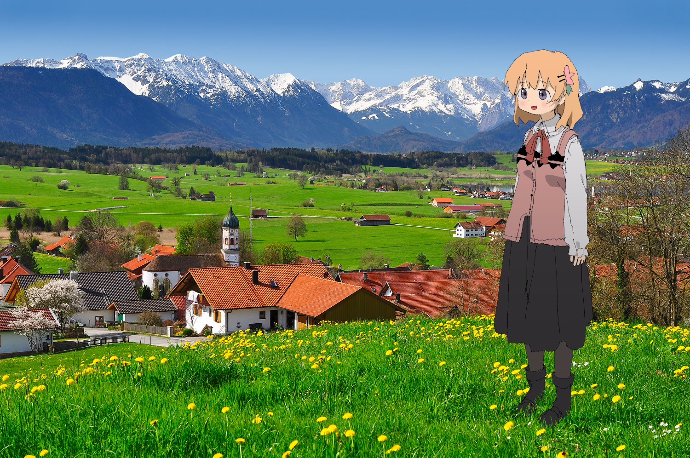
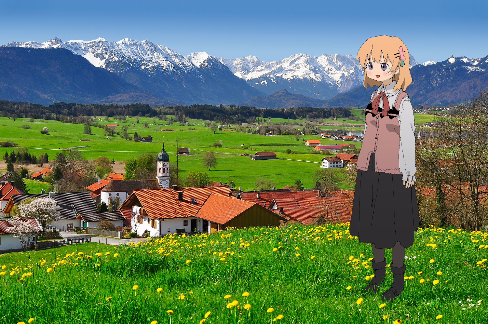

Nobody knows why or how but one day Kokowa got lost and so it began her long journey back home.
After very long journey Kokowa finally got back to civilization.
She had spent all of her money from all that travelling so she decided to work at cafè Florian for a while.
In the meantime Chino was very sad cause Kokowa was nowhere to be found.
Kokowa felt Chino's sadness so she decided to depart once more, to Gochiuzbekistan.
 

Finally after all this time Kokowa managed to get back home, Chino was there waiting for her.
Kokowa and Chino nakayoshied happily ever after, the end.
Video by (not) me: >>>/a/251106582